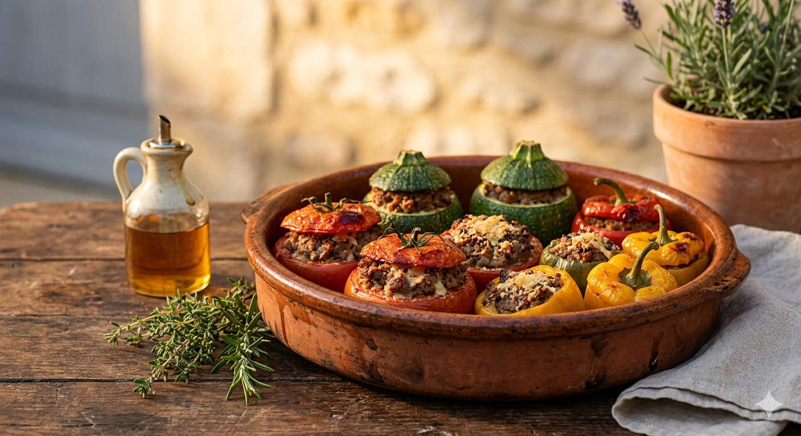

La Petite Histoire
C'est le plat du dimanche par excellence en Provence ! Autrefois, on utilisait les restes de viande du pot-au-feu pour garnir les légumes du jardin. On dit que chaque famille a son secret : un peu de pain rassis trempé dans le lait, une pointe d'ail ou un mélange bien précis d'herbes de la garrigue. C'est un plat qui demande du temps et de l'amour, mais quelle récompense quand l'odeur embaume toute la maison !
Les Ingrédients
- Légumes : 4 tomates grappe, 2 courgettes rondes, 2 petits poivrons, 2 oignons blancs.
- La Farce : 400g de chair à saucisse, 200g de bœuf haché.
- Le Liant : 1 œuf, 2 tranches de pain de mie trempées dans le lait.
- Les Aromates : 2 gousses d'ail, 1 bouquet de persil plat, thym, huile d'olive.
- Le Final : Chapelure fine et un filet d'huile d'olive.
La Préparation
1. Le creusage : Lavez les légumes. Coupez les chapeaux et évidez-les délicatement. Gardez la chair des tomates et des courgettes, hachez-la finement.
2. La Farce : Dans un grand saladier, mélangez les viandes, l'œuf, le pain essoré, l'ail haché, le persil et la chair des légumes. Salez, poivrez généreusement.
3. Le Remplissage : Garnissez chaque légume avec cette farce. Ne tassez pas trop. Replacez les chapeaux sur chaque légume.
4. La Cuisson : Disposez-les dans un plat huilé. Saupoudrez d'un peu de chapelure et arrosez d'un filet d'huile d'olive. Enfournez à 180°C pendant environ 45 à 50 minutes.
5. Le Conseil : Ils sont encore meilleurs réchauffés le lendemain, ou dégustés tièdes avec une petite salade de mesclun.